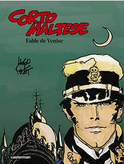

Cette bande-dessinée est issue d'un projet commun de Pratt et de l'écriivain Alberto Ongaro: la création d'une oeuvre ayant pour sujet Venise. Les deux artistes ne s'étant pas mis d'accord sur que faire, chacun réalisa la sienne. Celle d'Ongaro fut un livre, celle de Pratt un nouvel album de Corto Maltese de 80 pages, intitulé Fables de Venise. Il est considéré par de nombreux femme comme le meilleur album de la série.
Cette histoire, contrairement aux autres qui se déroulent en général sur de longues périodes, parfois plus d'un an, se déroule en deux semaines, du 10 au 25 avril 1921, à Venise, dans le contexte de l'ascension du fascisme en Italie. Comprenant de nombreux éléments ésotériques, liés parfois à la kabbale et la franc-maçonnerie, met en scène une chasse au trésor de Corto dans la ville, suite à un défi laissé par une lettre posthume du baron Corvo, célèbre artiste très lié à Venise. Il est question de la clavicule de Salomon, une mystérieuse émeraude liée à de nombreux personnages bibliques. Au cours de cette histoire, le marin rencontre à plusieurs reprises un personnage nommé le poète, qui est en réalité Gabriele D'Annunzio, poète et écrivain proche du fascisme.
